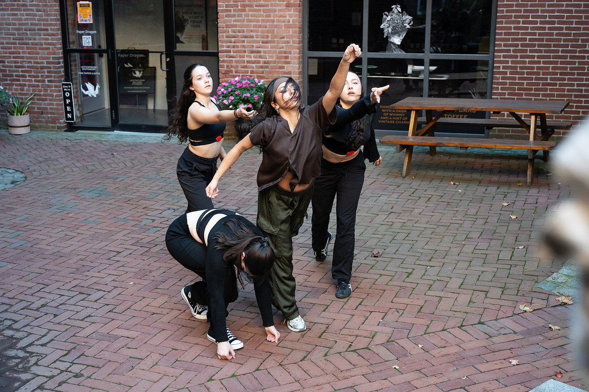
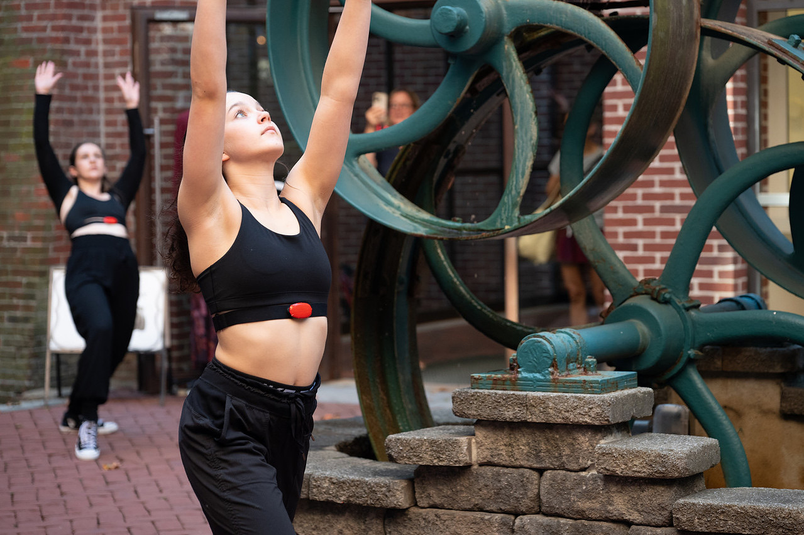
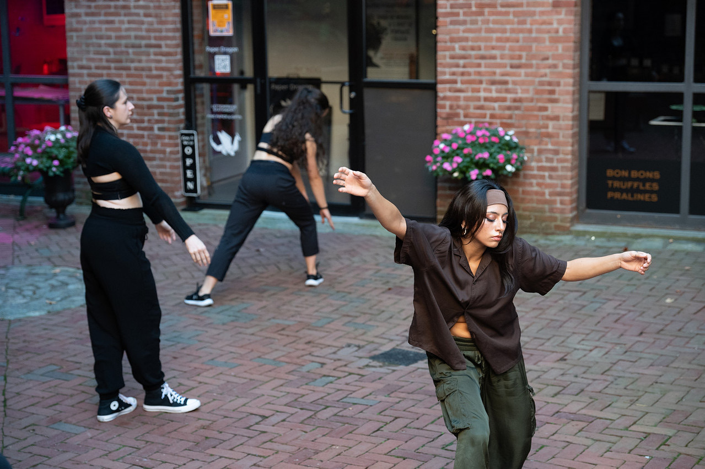
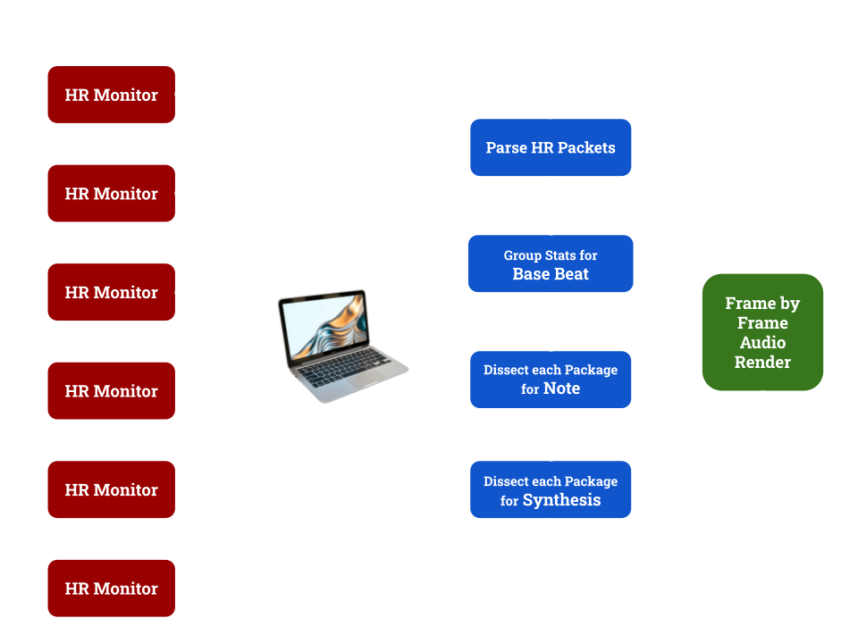
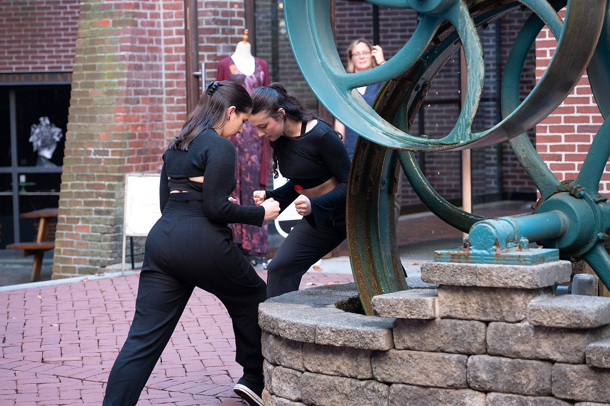
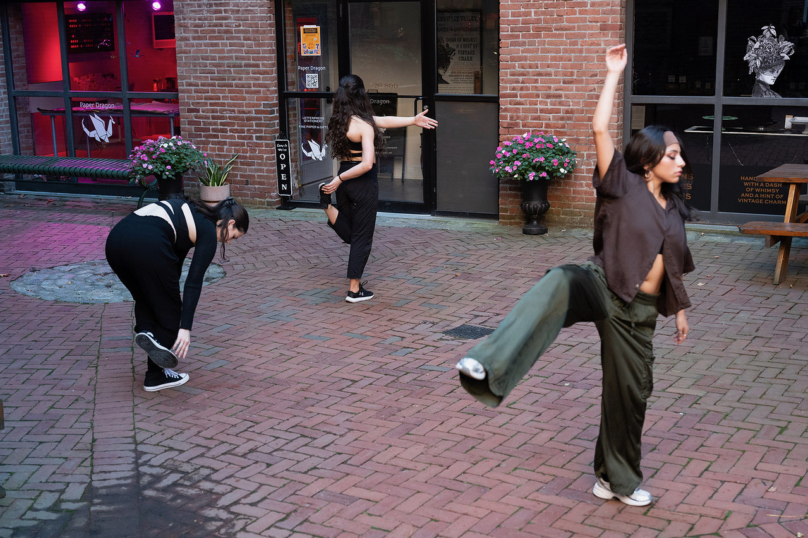

Purpose
In collaboration with Urbanity Dance, a Boston-based nonprofit, I developed an interactive system that translated dancers’ live heart-rate data into sound. Presented as part of Urbanity’s Fall Crawl under the theme “Technology and Human Connection”, the work explored how artificial intelligence and sensing technologies shape care, emotion, and collective experience.
By integrating wearable sensors with generative audio, the performance asked: how does technology change the way we listen—to our own bodies and to one another?

Problem Statement
The performance explored a paradox of intimacy: as technology becomes capable of sensing and quantifying us, it also redefines how we connect. Through dance, Heart-Driven Improvisation used biofeedback not to replace emotion, but to translate it—turning data into a shared language of care and attunement.
How might wearable technology transform physiological data into a medium for empathy, connection, and creative dialogue?
Objectives
- Investigate AI and sensing technologies as tools for interoceptive awareness and creative expression.
- Build a working prototype capable of processing and synchronizing multiple live heart-rate streams.
- Collaborate across artistic and technical disciplines to choreograph a system of mutual responsiveness.
- Reflect on how embodied data can deepen understanding of connection and care.
The system connected multiple heart-rate monitors worn by dancers to a custom audio-generation pipeline. As the dancers improvised, the sound evolved in real time—reflecting shifts in rhythm, effort, and connection. Rather than treating data as control, the project treated it as conversation: a dialogue between inner state, digital feedback, and embodied expression.
Process & Design
Creative System Design
The codebase processed incoming BPM data through a real-time synthesis engine.
- Input: Bluetooth/OSC heart-rate streams
- Processing: Normalization and smoothing for expressive stability
- Output: Layered sonic textures evolving with group rhythm
Testing cycles focused on balancing responsiveness and continuity. Each iteration refined mappings of BPM to tempo, pitch, and ambient density—producing a soundscape that felt alive yet organic to the choreography.
Thematic Integration
The Fall Crawl theme—“How is AI reshaping intergenerational bonds and our need for human connection?”—guided every design decision. The final system embodied this tension: a technical network creating sonic intimacy, where the audience could hear empathy itself take shape through shared pulse.


Research
Field Research & Technical Development
I began by surveying and testing heart-rate sensors for accuracy, latency, and open-data compatibility. After evaluating devices using Bluetooth and OSC, I designed a pipeline translating live heart-rate input into evolving sonic parameters—tempo, pitch, and timbral texture. For this project, I used the H6M monitors that connect via Bluetooth, and are about $27 per sensor, to keep the project budject friendly.
Synchronizing multiple data streams proved challenging; iterative calibration ensured each dancer’s signal retained individuality while contributing to a collective audio space.

Testing & Performance
Meeting with Courtney Spero, Urbanity's choreographer, allowed us to fine tune the sounds and dynamics of the heartrates across shared channels. We discussed synchrony, decay length of notes, and how ranges of heartrates across dancers could impact the conversation between notes and harmonies.
- Insight: Real-time synchronization was essential to perceived authenticity.
- Iteration: Adjusted scaling curves to fine-tune emotional pacing.


Future Interests
- Integrate ML models to musically interpret emotional synchrony.
- Work with ML models to process visual movements into sound.
- Add visual layers translating gesture into responsive graphics or light.
- Develop multi-modal feedback systems (projection, haptics, color).
- Create browser-based workshops exploring empathy, data, and embodiment.
Why This Project
This collaboration represented a synthesis of art, technology, and empathy—core to my ongoing work in human-AI co-creation. Heart-Driven Improvisation treated AI not as spectacle but as a mirror: using technology to listen more deeply to our own bodies and to one another.